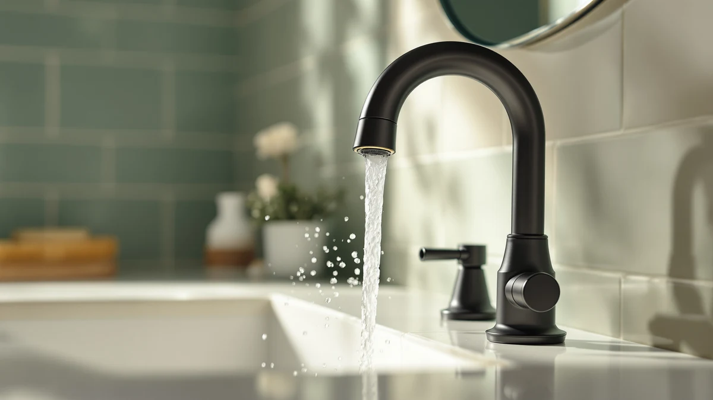

Best Bathroom Faucet for High Water Pressure (2026)
Prices and picks verified as of September 2026. Independent, reader-supported reviews.


Quick Answer
The best bathroom faucet for high water pressure depends on where the weak stream actually shows up, since a sink and a shower on the same supply line do not always feel equally weak. For most bathrooms, the Delta Faucet ProClean Chrome handheld spray is our pick at $45.22, because its wide-fan pattern restores a forceful feel without any plumbing work, while the Ryuwanku and Homevacious picks below are the better call if the sink itself is the problem.
Our pick: Delta Faucet ProClean Chrome Shower, $45.22 Check Price on Amazon
Bottom line: our top pick is the Delta Faucet ProClean Chrome Shower Head with Handheld at $40.70. The best budget option is the Ryuwanku Bathroom Faucet Matte Black Modern Waterfall at $28.99.
Things to Know Before You Buy
- Low pressure is not always the faucet's fault. A weak stream is often caused by a clogged aerator, a worn cartridge, or a house-wide pressure regulator, so before you buy anything, check whether the problem shows up at every fixture or only one.
- Federal law caps every bathroom fixture at 1.8 GPM. No compliant faucet or shower head sold in the US can legally exceed that flow rate, which is why "high pressure" products compete on nozzle design and spray pattern instead of raw volume.
- Sink faucets and shower sprays solve different problems. If your sink runs weak, a shower head upgrade like the Delta ProClean will not help; you need a faucet built for the sink itself, like the Ryuwanku or Homevacious picks in this guide.
- Self-clean nozzles matter more over time than they do on day one. Mineral buildup inside a shower head's nozzles is the most common reason pressure fades within a year, so a design like the AquaCare's anti-clog nozzles pays off later, not immediately.
- A wide-fan spray feels stronger than a narrow jet even at the same flow rate. Products like the ProClean spread the same 1.8 GPM across a broader pattern, which covers tile and hair faster and reads as more forceful without actually using more water.
The best bathroom faucet for high water pressure is not always a faucet at all. Amazon shoppers searching that phrase usually land on two different kinds of fixtures: handheld shower sprays built for a stronger rinse, and sink faucets built to push a fuller stream out of the spout. Both categories show up in this guide because both solve a version of the same complaint, a bathroom that feels underpowered compared to what you are used to.
We compared seven fixtures across those two categories, weighing flow rate, spray pattern, and how each one is built to resist the mineral buildup that quietly saps pressure over months of use. At $45.22, the Delta Faucet ProClean Chrome handheld spray is the pick we would reach for first, since its wide-fan pattern makes the most of the 1.8 GPM flow rate every compliant fixture is capped at. If your low-pressure complaint is at the sink rather than the shower, the $28.99 Ryuwanku or $41.79 Homevacious faucet further down this list is the more direct fix.
This is a research-based comparison, not a hands-on testing lab. We read listed specs, flow rates, and materials for each fixture, then cross-referenced that against verified owner reviews for the patterns that matter most to a pressure complaint: how well a spray head resists clogging, whether a faucet's waterfall spout actually feels forceful at the sink, and where buyers report pressure fading after a few months of hard water exposure.
Why You Should Trust Us
I'm Ilane Tall, and I write about bathroom fixtures with a focus on the practical complaints that send people shopping in the first place, weak pressure chief among them. A pressure problem is frustrating because the fix is not obvious: is it the fixture, the supply line, or the fixture's own buildup after a year of hard water? Sorting that out is the point of this guide, rather than ranking products by star rating alone.
We do not run a physical testing lab, and we are not going to claim we installed each of these fixtures in a bathroom and timed the spray ourselves. Instead, we compared listed flow rates, spray technology, and materials, and we read through verified owner reviews for the pattern that matters most here: whether a fixture's pressure holds up months after the unboxing photos were taken. Where a listing does not have enough review history to say much either way, we tell you that directly.
How We Picked
Picking the best bathroom faucet for high water pressure starts with separating the two problems buyers actually have. Some readers want their shower to feel stronger, so we included handheld sprays like the Delta ProClean and Hotel Spa AquaCare that are built specifically to maximize the 1.8 GPM cap through nozzle design. Others want more force at the sink itself, which is a different fix entirely, so we also included single-handle sink faucets like the Ryuwanku and Homevacious models rather than assuming every reader means the shower.
Within each category, we prioritized fixtures that describe how they resist losing pressure over time rather than fixtures that only advertise a strong spray on day one. The AquaCare's self-clean anti-clog nozzles and the Homevacious faucet's 80,000-cycle ceramic cartridge rating are both the kind of detail that predicts long-term performance better than a marketing claim about "high pressure" alone.
Price and material mattered too. Every faucet pick in this guide lists a stainless steel or brass-plus-finish build rather than an all-plastic body, since a plastic valve is one of the more common reasons a faucet's pressure and reliability degrade within a year or two of installation.
How We Compared
Narrowing down the best bathroom faucet for high water pressure meant staying honest about what we can and cannot claim. We are not going to fabricate hands-on impressions of how forceful each spray feels, since we have not installed these fixtures ourselves. Our comparison is criteria-driven: we read the listed flow rate, spray pattern, nozzle design, and materials for each fixture, then cross-referenced that against what verified buyers report about pressure, durability, and clogging over time.
We weighed the two Delta ProClean finishes and the two In2ition 2-in-1 listings directly against each other, since each pair shares the same core spray technology but lands at different price points, chrome against brushed nickel and one finish against another. For the two sink faucets, we compared cartridge cycle ratings and spout design rather than price alone, since a faucet that holds up to 80,000-plus cycles is doing more for the money than one with no published durability spec at all.
Our Picks

Delta Faucet ProClean Chrome Shower
What we like
- Wide fan spray covers more tile and hair per pass than a standard shower head
- Limited splashback design keeps the spray contained while you clean
- Chrome finish matches most standard shower fixtures
Flaws but not dealbreakers
- No published flow-rate spec beyond the 1.8 GPM federal cap
- Handheld design means an extra hose to manage in the shower
- Built for cleaning power more than a warm, rainfall-style rinse
| Material | Brass + finish |
| Size | 4.5 inches x 4.5 inches |
At $45.22, the Delta Faucet ProClean Chrome is a handheld shower spray built around a wide fan pattern rather than a single needle jet, and Delta markets it primarily as a cleaning tool that cuts scrubbing time on tile and hard-to-reach corners. That focus is exactly what makes it relevant to a high water pressure search: the same wide, forceful spray that blasts soap scum off tile also reads as a much stronger stream than a standard fixed shower head delivers.
The limited-splashback design is a genuine point in its favor if you have used aggressive high-pressure attachments before and ended up soaked outside the shower curtain. Delta's chrome finish is the safest match for most existing bathroom hardware, and the brushed nickel version below is priced lower for buyers who do not need the chrome match. The tradeoff is that this is a handheld unit, not a fixed head, so you are adding a hose and a mount rather than a drop-in replacement.

Delta Faucet ProClean Brushed Nickel
What we like
- Identical wide fan spray technology to the chrome pick above, at $8.46 less
- Brushed nickel hides water spotting better than polished chrome
- Same limited-splashback handheld design
Flaws but not dealbreakers
- Same lack of a published flow-rate number beyond the 1.8 GPM cap
- Only matches bathrooms already using brushed nickel hardware
- Still a handheld attachment, not a fixed shower head replacement
| Material | Brass + finish |
| Size | — |
The brushed nickel ProClean is functionally the same fixture as Delta's chrome version above, the same wide fan spray pattern and limited-splashback handheld design, in a different finish and at $36.76, about $8.50 less than the chrome option. If your bathroom hardware is already brushed nickel, this is the more consistent choice, and if finish does not matter to you, it is also simply the cheaper way to get the identical spray technology.
Brushed nickel has a practical edge over chrome in daily use: it shows water spots and fingerprints less readily, which matters for a fixture you are touching with wet, soapy hands multiple times a day. The tradeoff is the same one that applies to the chrome version, this is a handheld spray built for cleaning power and quick rinses, not a fixed rainfall-style head, so factor in the hose and mount before you buy.

Delta 6-Setting In2ition 2-in-1 Dual
What we like
- Combines a fixed overhead head with a dockable handheld sprayer
- 6 spray settings cover everything from a full-coverage rinse to a targeted stream
- Patented design lets both heads run at once for extra pressure
Flaws but not dealbreakers
- At $59.46, it costs roughly 30% more than the standalone ProClean sprays
- More moving parts, dock, hose, and dual head, mean more that can eventually wear out
- No published flow-rate spec independent from the 1.8 GPM federal cap
| Material | Brass + finish |
| Size | — |
The In2ition 2-in-1 is a different kind of product than the standalone ProClean sprays above: instead of a single handheld unit, it pairs a fixed overhead shower head with a handheld sprayer that docks into the center of it, so you get both a full-coverage rinse and a directed spray from one $59.46 installation. Delta's patented dual-purpose design lets water flow through both heads simultaneously, which is the closest thing in this guide to a genuine high-pressure shower experience rather than a cleaning attachment alone.
Six spray settings give you a real range, from a wide, forceful pattern for rinsing off quickly to a more targeted stream for washing your hair or a pet in the tub. The cost is the obvious tradeoff, at nearly double the price of the base ProClean handheld, and a dockable dual-head system has more parts that can eventually leak or loosen than a single fixed spray does. If you only need one function, the standalone ProClean sprays above cost less.

Delta 6-Setting In2ition 2-in-1 Dual
What we like
- Same 6-setting dual-head system as the $59.46 In2ition pick above
- Simultaneous flow from both heads for genuine full-coverage pressure
- Dockable handheld sprayer for targeted rinsing
Flaws but not dealbreakers
- $16 more than the otherwise identical In2ition listing above
- Same added complexity of a dock, hose, and dual head versus a single fixed unit
- Listing details do not make clear what justifies the price gap
| Material | Brass + finish |
| Size | — |
This is the second listing of Delta's 6-Setting In2ition 2-in-1 Dual in this guide, priced at $75.53, about $16 more than the otherwise identical version above. Both share the same patented dual-purpose design and 6 spray settings, and the listing does not spell out a clear functional difference beyond finish or packaging, which is common with shower fixtures sold under near-identical names by the same manufacturer.
If you have already decided the In2ition system is the right fit for your shower, it is worth checking both listings before buying, since the underlying hardware and spray settings appear to be the same. Absent a documented reason for the price gap, we would default to the $59.46 listing above and treat this one as a backup if that listing goes out of stock or the finish you want is only available here.

Hotel Spa AquaCare High Pressure
What we like
- 8-setting, 5-zone powerhead with a documented 1.8 GPM flow rate
- Self-clean anti-clog nozzles designed to resist the mineral buildup that saps pressure over time
- Built-in 2-mode power wash function doubles as a tile and tub cleaner
Flaws but not dealbreakers
- Still a handheld unit, so you need to mount it and manage a hose
- "Designed in USA" claim does not specify where the unit itself is manufactured
- Power wash mode is a novelty most buyers likely will not use often
| Material | Brass + finish |
| Size | 10.5 inches by 6.5 inches |
The Hotel Spa AquaCare is the only fixture in this guide with a specifically published flow rate, 1.8 GPM, matched to an 8-setting, 5-zone powerhead. What sets it apart from the Delta options above is the anti-clog nozzle design, built to resist the mineral buildup that is the single most common reason a shower head's pressure fades within its first year, especially in homes with hard water.
At $29.94 it is also the least expensive fixture in this guide, undercutting even the brushed nickel ProClean by nearly $7. The built-in 2-mode power wash function, which lets you blast tile and tub surfaces from several feet away, is a genuine extra rather than a marketing gimmick, though most buyers will use the standard shower settings far more often. The tradeoff against Delta's ProClean is nozzle-level detail versus brand recognition; both aim at the same wide-fan, high-pressure feel.

Ryuwanku Bathroom Faucet Matte Black
What we like
- SUS 304 stainless steel body resists corrosion better than a plastic-bodied faucet
- Quieter waterfall outlet reduces the rattling noise common in cheaper single-handle faucets
- 100% lead-free construction
Flaws but not dealbreakers
- No published cartridge cycle rating, unlike the Homevacious pick below
- Generic brand name means limited independent review history
- Short profile may not suit a deep vessel sink
| Material | Brass + finish |
| Size | Short |
Every fixture above this point in the guide is a shower attachment, but if your low water pressure complaint is actually at the bathroom sink, this Ryuwanku single-handle faucet at $28.99 is the more relevant fix. It is built from SUS 304 stainless steel rather than the all-plastic body common at this price point, and Ryuwanku specifically markets a redesigned waterfall outlet meant to smooth out the water flow and cut the rattling noise that cheaper single-handle faucets are prone to.
The single-handle design makes it easy to dial in flow and temperature with one motion, which matters more for a sink faucet than a shower head, since you are adjusting it constantly through the day. The main gap next to the Homevacious pick below is documentation: Ryuwanku does not publish a cartridge cycle rating, so you are relying more on the material spec and owner reviews than on a compared durability number.

Homevacious Matte Black Waterfall Bathroom
What we like
- Ceramic cartridge compared to 80,000-plus cycles, the most specific durability claim in this guide
- Wide waterfall spout with a calculated tilt angle designed to reduce splashing
- PVD coating compared against 24-hour salt spray for tarnish and corrosion resistance
Flaws but not dealbreakers
- About $13 more than the Ryuwanku pick above
- Requires a 3-hole widespread sink deck rather than dropping into a single hole
- Matte black finish shows dust more readily than it shows water spots
| Material | Brass + finish |
| Size | 8 Inch Widespread |
At $41.79, the Homevacious faucet is the most documented sink faucet in this guide. It pairs a wide waterfall spout, engineered with a specific tilt angle to reduce splashing, with a ceramic cartridge rated for more than 80,000 cycles, a concrete durability number that most faucets at this price simply do not publish. The PVD coating is also compared against a 24-hour salt spray standard, which is a real corrosion-resistance benchmark rather than a vague marketing claim.
The catch is installation: this is a 3-hole widespread design, so it needs a sink deck already cut for that configuration rather than a single hole. If your sink matches, the documented cartridge rating makes this the safer long-term bet over the Ryuwanku pick above, especially if pressure and flow feel matter more to you five years from now than they do on installation day.
Quick Comparison
| Product | Material | Price | Rating | Best for | Get it |
|---|---|---|---|---|---|
| Delta Faucet ProClean Chrome Shower | Brass + finish | $45.22 | 4 | Strongest wide-fan cleaning spray | View on Amazon → |
| Delta Faucet ProClean Brushed Nickel | Brass + finish | $36.76 | 4 | Same spray, brushed nickel finish | View on Amazon → |
| Delta 6-Setting In2ition 2-in-1 Dual | Brass + finish | $59.46 | 4 | Fixed head plus handheld in one | View on Amazon → |
| Delta 6-Setting In2ition 2-in-1 Dual | Brass + finish | $75.53 | 4 | Alternate finish of the In2ition system | View on Amazon → |
| Hotel Spa AquaCare High Pressure | Brass + finish | $29.94 | 4 | Self-clean nozzles that resist clogging | View on Amazon → |
| Ryuwanku Bathroom Faucet Matte Black | Brass + finish | $28.99 | 4 | Budget pick for weak sink pressure | View on Amazon → |
| Homevacious Matte Black Waterfall Bathroom | Brass + finish | $41.79 | 4 | Most durable sink faucet cartridge | View on Amazon → |
Will a new faucet actually fix low water pressure in my bathroom?
Sometimes, but not always.
What GPM should I look for in a high-pressure bathroom faucet?
The Hotel Spa AquaCare in this guide lists a 1.8 GPM flow rate, which is the federal standard cap for bathroom fixtures sold in the US, so no compliant product will exceed that number.
The Competition
We passed over several rainfall-style fixed shower heads that market a wide, luxury coverage plate but do not publish a flow rate or nozzle design beyond the marketing copy. A wide plate alone does not guarantee pressure within the 1.8 GPM cap, and without a documented spray design like the ProClean's fan pattern or the AquaCare's zoned powerhead, we could not verify a pressure claim against anything but a product photo.
We also set aside all-plastic-bodied sink faucets priced under $20. A plastic valve body is one of the more common reasons a faucet's pressure and seal both degrade within a year or two, and the small savings over the Ryuwanku pick above did not offset that risk for a fixture you likely do not want to replace again so soon.
Finally, we left out filtered shower heads that pair a water filter with a pressure claim. Filtration media inherently restricts flow to some degree, which works against a pressure-focused pick, so if water quality rather than force is your priority, treat that as a separate buying decision from the one this guide covers. Our buying guide covers cartridge and valve materials in more depth if you want the full breakdown.
Weighing all of that, the best bathroom faucet for high water pressure is still the Delta ProClean Chrome handheld spray at $45.22, because its wide-fan pattern gets the most out of the 1.8 GPM cap every fixture here shares. If your pressure problem is at the sink instead, the Homevacious waterfall faucet is the stronger, better-documented choice.